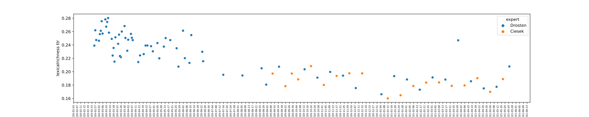
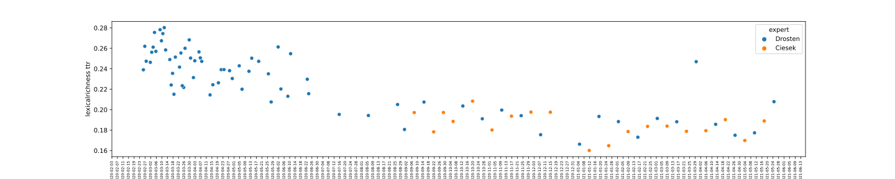

Projektbeschreibung
Im Rahmen des Seminars “Die Pandemie in Sprache und Text - Corona-Podcasts & Co.”
untersuchen wir einer der bekanntesten Corona Podcasts, nämlich den Podcast
"Das Coronavirus-Update von NDR Info". Dieser Podcast wird unter anderem vom Virologen
Christian Drosten geführt. Aktuell gibt es schon über 100 Folgen. Die erste Folge dieses Podcasts ging am 26.2.2020 online.
Unsere Hypothese lautet, dass neue Wörter während der Pandemie entstanden sind und diese
zunächst in dem oben genannten Podcast auftraten und verbreitet wurden. Wir überlegen uns geeignete Schlagwörter,
die wir anhand ihres Erscheinens und auf ihre Häufigkeit im Podcast auf einem Zeitstrahl darstellen wollen.
Aus diesem Grund untersuchen wir bekannte Schlagwörter aus der "besonderen aktuellen Lage": Durchseuchung, (FFP2-)Maske, Herdenimmunität, Superspreader, Mutation, Impfstrategie
Pandemie, Lockdown, AHA-Formel, Epidemie, Hotspot, Inzidenz, Lockerungen, Quarantäne, Testpflicht.
Zum Nachschlagen:
Link zum NDR Glossar
Link zum Google Trends
Wir haben unsere Ergebnisse mithilfe Type-Token-Ratio und mit Tf-idf erhalten. Im Weiterem werden beide Methoden kurz erläutert.
Type-Token-Ratio: Das Type-Token-Ratio bildet eine Relation zwischen der Zahl der Wörter im Text insgesamt und der Zahl der verschiedenen Wörter. Token sind hierbei die zerlegten Wörter und Type steht für die Menge der vorkommenden Wortformen. Flesh-Reading-Ease: Der Flesh-Reading-Ease steht für einen numerischen Wert, der die Lesbarkeit eines Textes berechnet. Je höher dieser Wert ist, desto verständlicher ist der Text. Ein gut verständlicher Text hat einen Wert zwischen 60 und 70. Die Berechnung stellt sich aus der durchschnittlichen Satzlänge und Silbenanzahl pro Wert zusammen.
Tf-idf ist ein statistisches Maß, das Auskunft über die Relevanz von Wörtern für ein Dokument in einem bestimmten Korpus gibt. Hierbei steht tf für die Vorkommenshäufigkeit eines Wortes pro Dokument, welche durch die inverse Dokumenthäufigkeit (idf) gewichtet wird. Stoppwörter kommen beispielsweise häufig und in vielen Dokumenten eines Korpus vor und sind somit, selbst bei einer außergewöhnlich hohen Frequenz, nicht aussagekräftig für den Inhalt eines Textes
In unserem Fall könnten die Tf-idf-Werte pro Podcastfolge Rückschlüsse auf ein neues Aufkommen und daraus resultierender eingehender Diskussion der untersuchten Schlagwörter zulassen.

 
